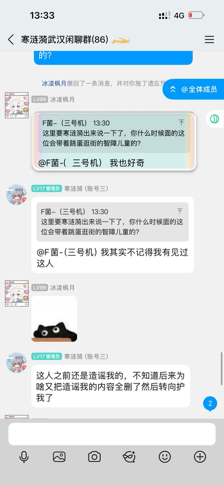

時璃風医詩🌈🏳️🌈
@hagishigure
@FJUNNNN 我是不明白你寒小姐是如何能把求证当成造谣的。三崎这边给我发了东西，我贴出来问她是不是真的，她闭口不谈是何意味，如果清清白白为什么不能说，有什么理由必须不能说吗这些事情，难道不是只要说清楚了就能处理好程梓语传播的东西吗。

F菌🏳️⚧️
@FJUNNNN
@hagishigure 寒涟漪表示不记得和你面过，说实话，你是不是反串黑？你明不明白在这种话题上拱火只会让事情变得糟糕？你既然知道什么是平庸之恶乌合之众，就不要在这里瞎逼逼 https://t.co/0sOVPLXTvo